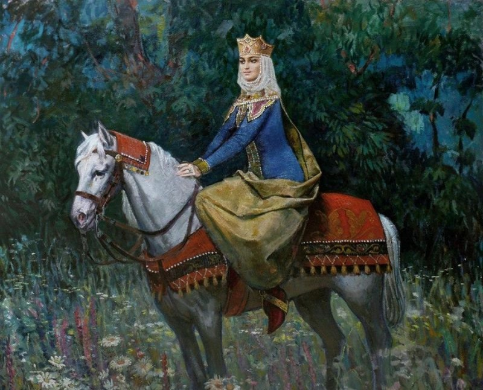

Queen Tamar ( Georgian: თამარ მეფე ; mepe, Georgian: "king"; * around 1160; † January 18, 1213 ) of the Bagratid dynasty was ruler of medieval Georgia from 1184 to 1213 , when it was at the height of its power in the Golden Age . The great-granddaughter of David the Builder modernized the state system, created elements of civil rights , democracy and the rule of law . She was referred to by the Georgian people not as queen, but as King Tamar.
